R
# Contoh sederhana for loop
for (i in 1:5) {
print(i * 2)
}[1] 2
[1] 4
[1] 6
[1] 8
[1] 10# Menyimpan hasil dalam vector
hasil <- c()
for (i in 1:10) {
hasil[i] <- i^2
}
hasil [1] 1 4 9 16 25 36 49 64 81 100Studi Kasus: Analisis Performa Kendaraan - Dari Data ke Keputusan
Kembali ke Arsip Praktikum PSD 2025
Setelah menyelesaikan modul ini, mahasiswa diharapkan mampu:
Selamat! Anda kini menjadi data analyst di sebuah perusahaan otomotif besar. Manajer Anda memberikan proyek penting: “Vehicle Performance Analysis”. Perusahaan sedang mempertimbangkan untuk mengubah kebijakan armada kendaraan mereka dan membutuhkan analisis mendalam tentang performa berbagai tipe kendaraan.
Anda diminta untuk: 1. Menganalisis karakteristik kendaraan dari data sampel yang ada 2. Membuat prediksi tentang populasi kendaraan berdasarkan sampel 3. Menguji hipotesis tentang perbedaan performa antar tipe kendaraan 4. Mengidentifikasi hubungan antar variabel performa 5. Menyajikan laporan profesional yang mudah dipahami stakeholder
Data yang Anda miliki adalah dataset mtcars yang berisi informasi 32 model mobil dengan berbagai spesifikasi seperti konsumsi bahan bakar (mpg), jumlah silinder (cyl), tenaga kuda (hp), berat (wt), dan lainnya.
Mari kita mulai perjalanan analisis ini dari konsep fundamental hingga komunikasi hasil!
Dalam dunia nyata, kita jarang bisa mengakses data seluruh populasi. Misalnya, tidak mungkin kita menguji semua mobil di dunia untuk mengetahui rata-rata konsumsi bahan bakar. Yang bisa kita lakukan adalah mengambil sampel dan menggunakan informasi dari sampel tersebut untuk membuat kesimpulan tentang populasi.
Distribusi sampling adalah distribusi dari statistik (seperti rata-rata) yang dihitung dari berbagai sampel. Ini menjadi jembatan antara sampel yang kita miliki dengan populasi yang ingin kita pahami.
Sebelum melakukan simulasi distribusi sampling, kita perlu memahami perulangan di R.
For loop digunakan untuk mengulang kode sebanyak yang kita tentukan:
R
# Contoh sederhana for loop
for (i in 1:5) {
print(i * 2)
}[1] 2
[1] 4
[1] 6
[1] 8
[1] 10# Menyimpan hasil dalam vector
hasil <- c()
for (i in 1:10) {
hasil[i] <- i^2
}
hasil [1] 1 4 9 16 25 36 49 64 81 100Fungsi replicate() adalah cara yang lebih R-idiomatik untuk melakukan perulangan, terutama untuk simulasi:
R
# Melakukan simulasi 5 kali
replicate(5, rnorm(3, mean = 10, sd = 2)) [,1] [,2] [,3] [,4] [,5]
[1,] 11.846108 8.86962 8.143034 11.41127 9.116424
[2,] 9.902918 12.67956 11.149411 12.13345 9.379257
[3,] 7.233099 10.72040 13.622855 7.62777 7.667060# Menghitung rata-rata dari 1000 sampel
sample_means <- replicate(1000, mean(rnorm(30, mean = 50, sd = 10)))
# Visualisasi distribusi sample means
hist(sample_means,
main = "Distribusi Sample Means",
xlab = "Sample Mean",
col = "lightblue",
breaks = 30)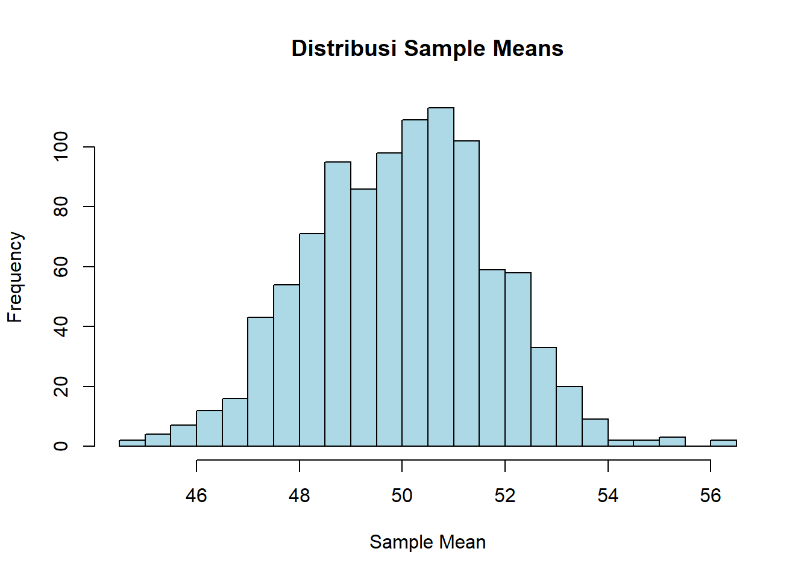
Central Limit Theorem adalah salah satu teorema paling penting dalam statistika:
Teorema Limit Pusat: Untuk sampel berukuran besar (n ≥ 30), distribusi sample mean akan mendekati distribusi normal, apapun bentuk distribusi populasi aslinya.
Secara matematis, jika kita punya sampel berukuran \(n\) dari populasi dengan mean \(\mu\) dan variansi \(\sigma^2\), maka:
\[\bar{X} \sim N\left(\mu, \frac{\sigma^2}{n}\right)\]
atau dalam bentuk standar:
\[Z = \frac{\bar{X} - \mu}{\sigma/\sqrt{n}} \sim N(0,1)\]
Studi Kasus: Simulasi CLT dengan Data Kendaraan
R
# Muat data mtcars
data(mtcars)
# Lihat distribusi mpg (miles per gallon)
hist(mtcars$mpg,
main = "Distribusi MPG Populasi",
xlab = "MPG",
col = "coral",
breaks = 10)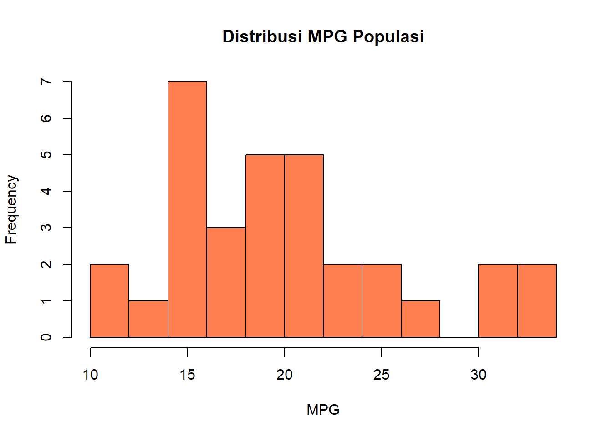
# Parameter populasi
mu <- mean(mtcars$mpg)
sigma <- sd(mtcars$mpg)
# Simulasi distribusi sample mean untuk berbagai ukuran sampel
simulasi_sampling <- function(n_sample, n_simulasi = 1000) {
sample_means <- replicate(n_simulasi, {
sample_data <- sample(mtcars$mpg, size = n_sample, replace = TRUE)
mean(sample_data)
})
return(sample_means)
}
# Ukuran sampel berbeda
par(mfrow = c(2, 2))
for (n in c(5, 10, 20, 30)) {
sample_means <- simulasi_sampling(n)
hist(sample_means,
main = paste("Sample Mean (n =", n, ")"),
xlab = "Mean",
col = "lightgreen",
breaks = 30)
abline(v = mu, col = "red", lwd = 2)
}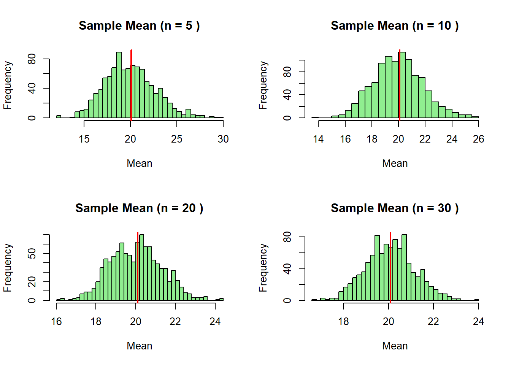
par(mfrow = c(1, 1))Kesimpulan: Perhatikan bahwa semakin besar ukuran sampel, distribusi sample mean semakin mendekati distribusi normal dan semakin terkonsentrasi di sekitar mean populasi.
Ketika: - Ukuran sampel kecil (n < 30), DAN - Variansi populasi tidak diketahui
Kita menggunakan distribusi-t dengan derajat bebas \(v = n - 1\):
\[t = \frac{\bar{x} - \mu}{s/\sqrt{n}}\]
di mana \(s\) adalah standar deviasi sampel.
Contoh: Misalkan kita hanya punya sampel 10 mobil dan ingin mengetahui probabilitas rata-rata mpg kurang dari 18.
R
# Ambil sampel kecil
set.seed(123)
sampel_kecil <- sample(mtcars$mpg, 10)
# Hitung statistik sampel
xbar <- mean(sampel_kecil)
s <- sd(sampel_kecil)
n <- length(sampel_kecil)
# Misalkan kita ingin hitung P(rata-rata < 18)
# Gunakan distribusi t
nilai_t <- (18 - xbar) / (s / sqrt(n))
prob <- pt(nilai_t, df = n - 1)
cat(sprintf("Probabilitas rata-rata MPG < 18 adalah: %.4f\n", prob))Probabilitas rata-rata MPG < 18 adalah: 0.2249# Visualisasi distribusi t
x <- seq(-4, 4, length = 100)
plot(x, dt(x, df = n-1), type = "l",
main = "Distribusi t (df = 9)",
ylab = "Density",
col = "blue", lwd = 2)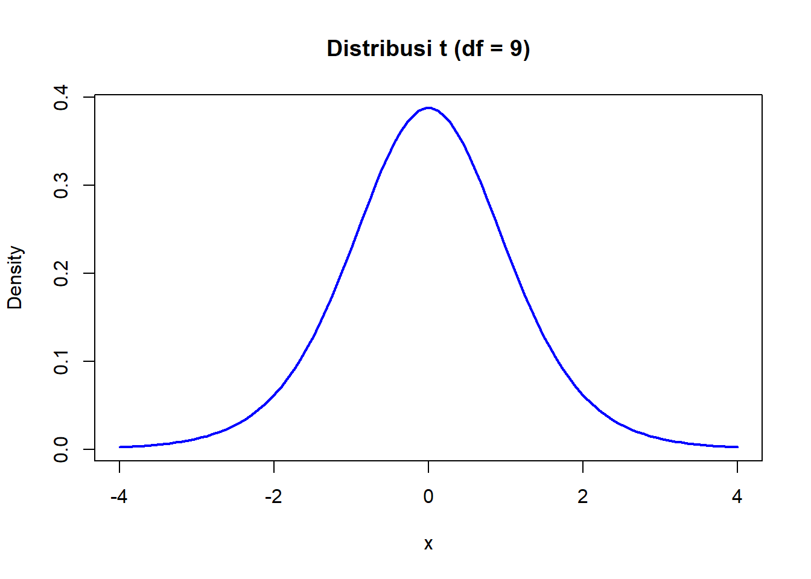
Taksiran titik adalah nilai tunggal yang kita gunakan untuk mengestimasi parameter populasi.
R
# Taksiran untuk mean
mean_mpg <- mean(mtcars$mpg)
cat(sprintf("Taksiran mean MPG: %.2f\n", mean_mpg))Taksiran mean MPG: 20.09# Taksiran untuk variansi
var_mpg <- var(mtcars$mpg)
cat(sprintf("Taksiran variansi MPG: %.2f\n", var_mpg))Taksiran variansi MPG: 36.32# Taksiran untuk proporsi (mobil dengan mpg > 20)
prop_high_mpg <- mean(mtcars$mpg > 20)
cat(sprintf("Taksiran proporsi mobil dengan MPG > 20: %.2f%%\n", prop_high_mpg * 100))Taksiran proporsi mobil dengan MPG > 20: 43.75%Interval kepercayaan memberikan rentang nilai di mana parameter populasi kemungkinan besar berada, dengan tingkat kepercayaan tertentu (misal 95%).
Rumus interval kepercayaan jika variansi populasi \(\sigma^2\) diketahui:
\[\text{CI} = \bar{x} \pm z_{1-\alpha/2} \cdot \frac{\sigma}{\sqrt{n}}\]
R
# Misalkan kita tahu variansi populasi mpg adalah 36
sigma_known <- sqrt(36)
n <- nrow(mtcars)
xbar <- mean(mtcars$mpg)
alpha <- 0.05
z_critical <- qnorm(1 - alpha/2)
margin_error <- z_critical * sigma_known / sqrt(n)
ci_lower <- xbar - margin_error
ci_upper <- xbar + margin_error
cat(sprintf("CI 95%% untuk mean MPG: (%.2f, %.2f)\n", ci_lower, ci_upper))CI 95% untuk mean MPG: (18.01, 22.17)Rumus interval kepercayaan jika variansi populasi tidak diketahui (lebih realistis):
\[\text{CI} = \bar{x} \pm t_{1-\alpha/2; n-1} \cdot \frac{s}{\sqrt{n}}\]
R
# Gunakan variansi sampel
s <- sd(mtcars$mpg)
n <- nrow(mtcars)
xbar <- mean(mtcars$mpg)
alpha <- 0.05
t_critical <- qt(1 - alpha/2, df = n - 1)
margin_error <- t_critical * s / sqrt(n)
ci_lower <- xbar - margin_error
ci_upper <- xbar + margin_error
cat(sprintf("CI 95%% untuk mean MPG: (%.2f, %.2f)\n", ci_lower, ci_upper))CI 95% untuk mean MPG: (17.92, 22.26)# Atau gunakan fungsi bawaan R
t.test(mtcars$mpg, conf.level = 0.95)$conf.int[1] 17.91768 22.26357
attr(,"conf.level")
[1] 0.95Sering kita ingin membandingkan dua kelompok. Misalnya, apakah ada perbedaan rata-rata MPG antara mobil matic dan manual?
R
# Pisahkan data berdasarkan transmisi (am: 0=automatic, 1=manual)
mpg_automatic <- mtcars$mpg[mtcars$am == 0]
mpg_manual <- mtcars$mpg[mtcars$am == 1]
# Hitung statistik
mean_auto <- mean(mpg_automatic)
mean_manual <- mean(mpg_manual)
var_auto <- var(mpg_automatic)
var_manual <- var(mpg_manual)
n_auto <- length(mpg_automatic)
n_manual <- length(mpg_manual)
# Interval kepercayaan untuk beda mean (variansi tidak sama)
df <- (var_auto/n_auto + var_manual/n_manual)^2 /
((var_auto/n_auto)^2/(n_auto-1) + (var_manual/n_manual)^2/(n_manual-1))
t_crit <- qt(0.975, df = df)
se <- sqrt(var_auto/n_auto + var_manual/n_manual)
ci_lower <- (mean_manual - mean_auto) - t_crit * se
ci_upper <- (mean_manual - mean_auto) + t_crit * se
cat(sprintf("Beda rata-rata MPG (Manual - Automatic): %.2f\n", mean_manual - mean_auto))Beda rata-rata MPG (Manual - Automatic): 7.24cat(sprintf("CI 95%%: (%.2f, %.2f)\n", ci_lower, ci_upper))CI 95%: (3.21, 11.28)# Atau gunakan t.test
t.test(mpg_manual, mpg_automatic, var.equal = FALSE)
Welch Two Sample t-test
data: mpg_manual and mpg_automatic
t = 3.7671, df = 18.332, p-value = 0.001374
alternative hypothesis: true difference in means is not equal to 0
95 percent confidence interval:
3.209684 11.280194
sample estimates:
mean of x mean of y
24.39231 17.14737 Interpretasi: Karena interval kepercayaan tidak mengandung 0, kita bisa simpulkan bahwa ada perbedaan signifikan antara MPG mobil manual dan automatic pada tingkat kepercayaan 95%.
Studi Kasus: Apakah rata-rata displacement kendaraan sama dengan 250 cubic inches?
R
# H0: mu = 250
# H1: mu ≠ 250
# Alpha = 0.05
mu_0 <- 250
alpha <- 0.05
# Lakukan uji t
result <- t.test(mtcars$disp, mu = mu_0, alternative = "two.sided")
# Ekstrak informasi
t_stat <- as.numeric(result$statistic)
p_value <- result$p.value
df <- result$parameter
cat("===== UJI HIPOTESIS =====\n")===== UJI HIPOTESIS =====cat(sprintf("H0: μ = %d\n", mu_0))H0: μ = 250cat(sprintf("H1: μ ≠ %d\n", mu_0))H1: μ ≠ 250cat(sprintf("Taraf signifikansi: α = %.2f\n\n", alpha))Taraf signifikansi: α = 0.05cat(sprintf("Statistik uji t = %.4f\n", t_stat))Statistik uji t = -0.8799cat(sprintf("Derajat bebas = %d\n", df))Derajat bebas = 31cat(sprintf("P-value = %.6f\n\n", p_value))P-value = 0.385684# Keputusan
if (p_value < alpha) {
cat("Keputusan: TOLAK H0\n")
cat(sprintf("Kesimpulan: Mean displacement TIDAK sama dengan %d (α = %.2f)\n", mu_0, alpha))
} else {
cat("Keputusan: TIDAK TOLAK H0\n")
cat(sprintf("Kesimpulan: Mean displacement sama dengan %d (α = %.2f)\n", mu_0, alpha))
}Keputusan: TIDAK TOLAK H0
Kesimpulan: Mean displacement sama dengan 250 (α = 0.05)# Visualisasi
curve(dt(x, df = df), from = -4, to = 4,
main = "Distribusi t dan Statistik Uji",
ylab = "Density", xlab = "t")
abline(v = t_stat, col = "red", lwd = 2)
abline(v = qt(c(alpha/2, 1-alpha/2), df = df), col = "blue", lty = 2)
legend("topright",
legend = c("Statistik Uji", "Nilai Kritis"),
col = c("red", "blue"), lwd = c(2, 1), lty = c(1, 2))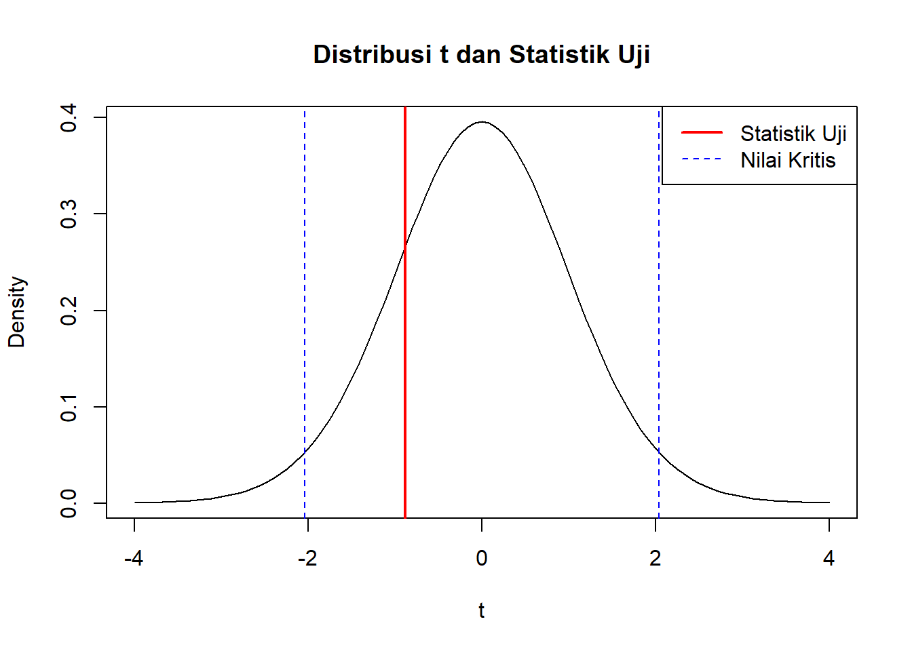
Studi Kasus: Apakah ada perbedaan signifikan displacement antara mobil automatic dan manual?
R
# H0: μ_automatic = μ_manual
# H1: μ_automatic ≠ μ_manual
# Alpha = 0.05
disp_auto <- mtcars$disp[mtcars$am == 0]
disp_manual <- mtcars$disp[mtcars$am == 1]
# Uji t (variansi tidak diasumsikan sama)
result <- t.test(disp_auto, disp_manual,
alternative = "two.sided",
var.equal = FALSE)
print(result)
Welch Two Sample t-test
data: disp_auto and disp_manual
t = 4.1977, df = 29.258, p-value = 0.00023
alternative hypothesis: true difference in means is not equal to 0
95 percent confidence interval:
75.32779 218.36857
sample estimates:
mean of x mean of y
290.3789 143.5308 # Visualisasi boxplot
boxplot(disp ~ am, data = mtcars,
names = c("Automatic", "Manual"),
main = "Displacement: Automatic vs Manual",
ylab = "Displacement (cu.in.)",
col = c("lightcoral", "lightblue"))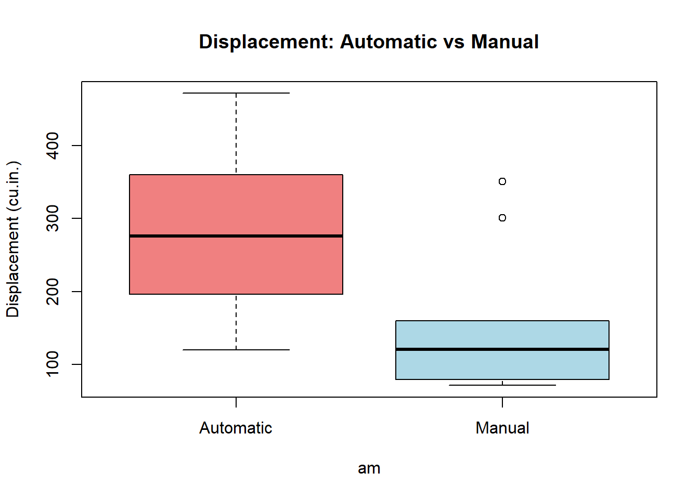
Bagaimana jika kita ingin membandingkan lebih dari dua kelompok? Misalnya, membandingkan MPG untuk mobil dengan 4, 6, dan 8 silinder?
Analysis of Variance (ANOVA) digunakan untuk tujuan ini.
Hipotesis: - \(H_0\): \(\mu_1 = \mu_2 = \mu_3\) (semua mean sama) - \(H_1\): Setidaknya satu mean berbeda
Asumsi ANOVA: 1. Sampel independen 2. Populasi berdistribusi normal 3. Variansi populasi sama (homogenitas variansi)
R
# PENTING: Ubah cyl menjadi faktor terlebih dahulu
mtcars$cyl <- as.factor(mtcars$cyl)
# Visualisasi awal
boxplot(mpg ~ cyl, data = mtcars,
main = "MPG Berdasarkan Jumlah Silinder",
xlab = "Jumlah Silinder",
ylab = "MPG",
col = c("lightgreen", "lightyellow", "lightpink"))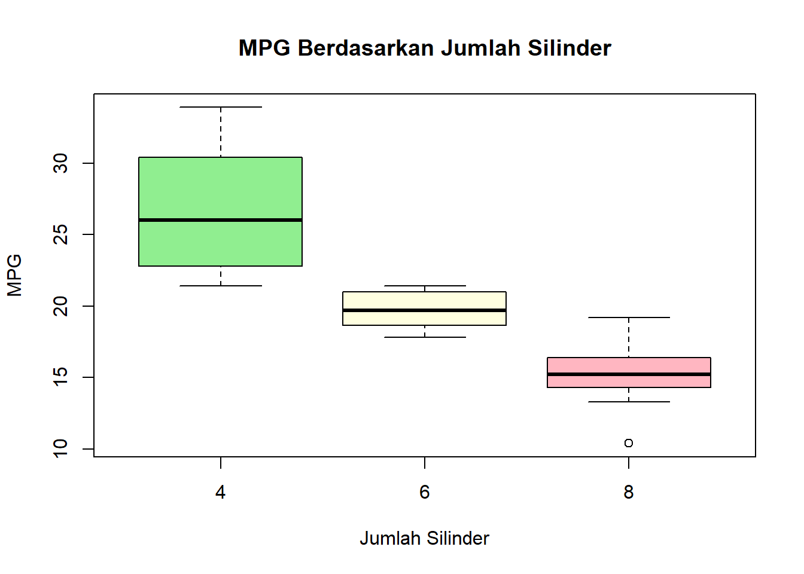
# Statistik deskriptif per kelompok
aggregate(mpg ~ cyl, data = mtcars, FUN = function(x) {
c(mean = mean(x), sd = sd(x), n = length(x))
}) cyl mpg.mean mpg.sd mpg.n
1 4 26.663636 4.509828 11.000000
2 6 19.742857 1.453567 7.000000
3 8 15.100000 2.560048 14.000000# Lakukan uji ANOVA
anova_result <- aov(mpg ~ cyl, data = mtcars)
summary(anova_result) Df Sum Sq Mean Sq F value Pr(>F)
cyl 2 824.8 412.4 39.7 4.98e-09 ***
Residuals 29 301.3 10.4
---
Signif. codes: 0 '***' 0.001 '**' 0.01 '*' 0.05 '.' 0.1 ' ' 1# Atau gunakan oneway.test
oneway.test(mpg ~ cyl, data = mtcars)
One-way analysis of means (not assuming equal variances)
data: mpg and cyl
F = 31.624, num df = 2.000, denom df = 18.032, p-value = 1.271e-06# Interpretasi
alpha <- 0.05
p_value <- summary(anova_result)[[1]]$"Pr(>F)"[1]
cat(sprintf("\nP-value ANOVA: %.6f\n", p_value))
P-value ANOVA: 0.000000if (p_value < alpha) {
cat("Kesimpulan: Terdapat perbedaan signifikan rata-rata MPG antar kelompok silinder.\n")
} else {
cat("Kesimpulan: Tidak terdapat perbedaan signifikan rata-rata MPG antar kelompok silinder.\n")
}Kesimpulan: Terdapat perbedaan signifikan rata-rata MPG antar kelompok silinder.Post-hoc test: Jika ANOVA menolak H0, kita bisa melakukan uji lanjutan untuk mengetahui kelompok mana yang berbeda:
R
# Tukey HSD (Honestly Significant Difference)
TukeyHSD(anova_result) Tukey multiple comparisons of means
95% family-wise confidence level
Fit: aov(formula = mpg ~ cyl, data = mtcars)
$cyl
diff lwr upr p adj
6-4 -6.920779 -10.769350 -3.0722086 0.0003424
8-4 -11.563636 -14.770779 -8.3564942 0.0000000
8-6 -4.642857 -8.327583 -0.9581313 0.0112287# Visualisasi
plot(TukeyHSD(anova_result), las = 1)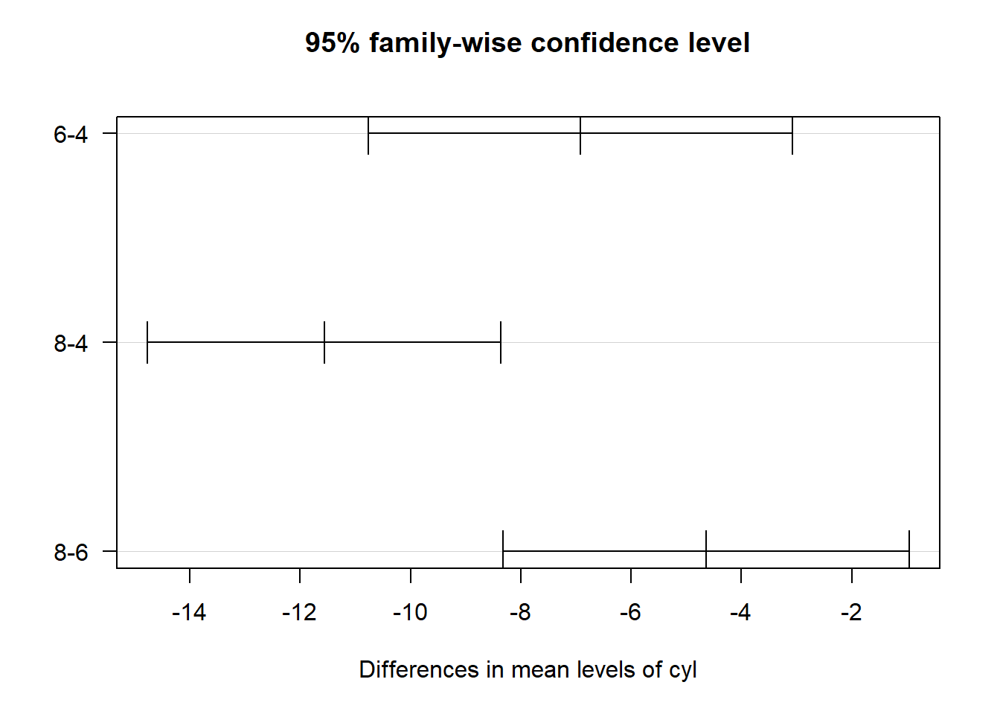
# Kembalikan cyl ke numerik jika diperlukan untuk analisis lain
mtcars$cyl <- as.numeric(as.character(mtcars$cyl))Menguji apakah data mengikuti distribusi tertentu.
Contoh: Apakah pelemparan dadu seimbang?
R
# Data pelemparan dadu 120 kali
set.seed(42)
dadu <- sample(1:6, 120, replace = TRUE)
# Hitung frekuensi
obs_freq <- table(dadu)
obs_freqdadu
1 2 3 4 5 6
21 27 12 20 24 16 # Frekuensi yang diharapkan jika dadu seimbang
expected_freq <- rep(120/6, 6)
# Buat data frame
df_dadu <- data.frame(
Mata = 1:6,
Observasi = as.vector(obs_freq),
Ekspektasi = expected_freq
)
print(df_dadu) Mata Observasi Ekspektasi
1 1 21 20
2 2 27 20
3 3 12 20
4 4 20 20
5 5 24 20
6 6 16 20# Hitung statistik Chi-squared
chi_sq <- sum((df_dadu$Observasi - df_dadu$Ekspektasi)^2 / df_dadu$Ekspektasi)
df <- 6 - 1
p_value <- 1 - pchisq(chi_sq, df = df)
cat(sprintf("Statistik Chi-squared: %.4f\n", chi_sq))Statistik Chi-squared: 7.3000cat(sprintf("Derajat bebas: %d\n", df))Derajat bebas: 5cat(sprintf("P-value: %.4f\n", p_value))P-value: 0.1993# Nilai kritis
chi_critical <- qchisq(0.95, df = df)
cat(sprintf("Nilai kritis (α=0.05): %.4f\n\n", chi_critical))Nilai kritis (α=0.05): 11.0705if (p_value < 0.05) {
cat("Kesimpulan: Dadu TIDAK seimbang\n")
} else {
cat("Kesimpulan: Dadu seimbang\n")
}Kesimpulan: Dadu seimbang# Visualisasi
barplot(rbind(df_dadu$Observasi, df_dadu$Ekspektasi),
beside = TRUE,
names.arg = df_dadu$Mata,
col = c("steelblue", "coral"),
legend.text = c("Observasi", "Ekspektasi"),
main = "Uji Goodness of Fit: Keseimbangan Dadu",
xlab = "Mata Dadu",
ylab = "Frekuensi")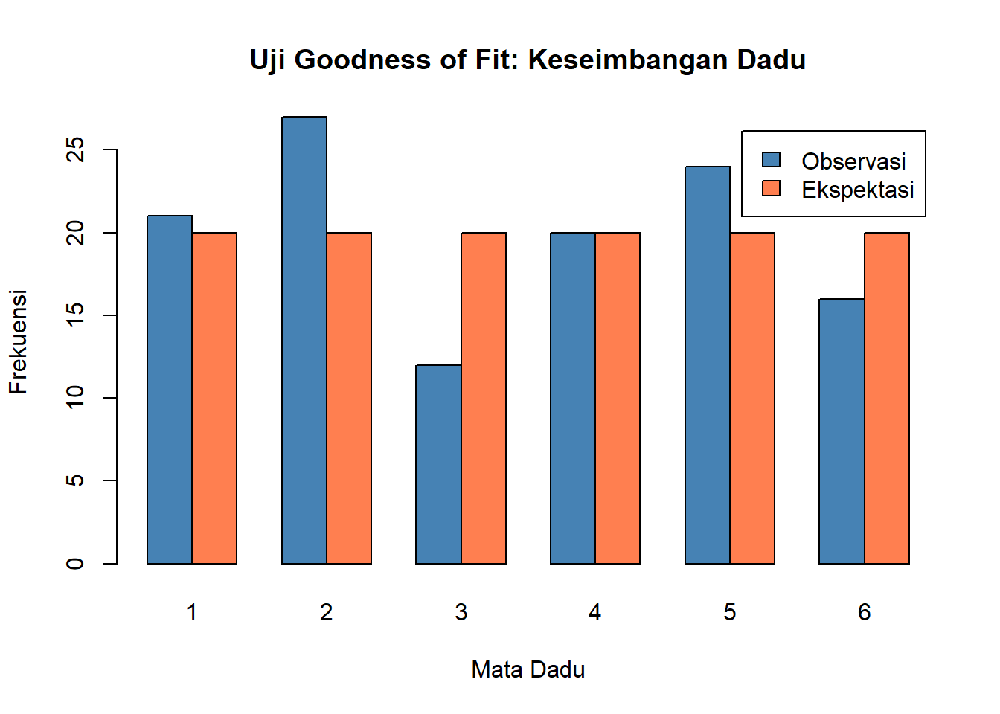
Menguji apakah dua variabel kategorik saling independen.
Contoh: Apakah tipe transmisi (automatic/manual) berhubungan dengan jumlah silinder?
R
# Buat tabel kontingensi
tabel_konting <- table(mtcars$am, mtcars$cyl)
rownames(tabel_konting) <- c("Automatic", "Manual")
colnames(tabel_konting) <- c("4 cyl", "6 cyl", "8 cyl")
print(tabel_konting)
4 cyl 6 cyl 8 cyl
Automatic 3 4 12
Manual 8 3 2# Visualisasi
mosaicplot(tabel_konting,
main = "Transmisi vs Jumlah Silinder",
color = c("lightblue", "lightgreen", "lightcoral"))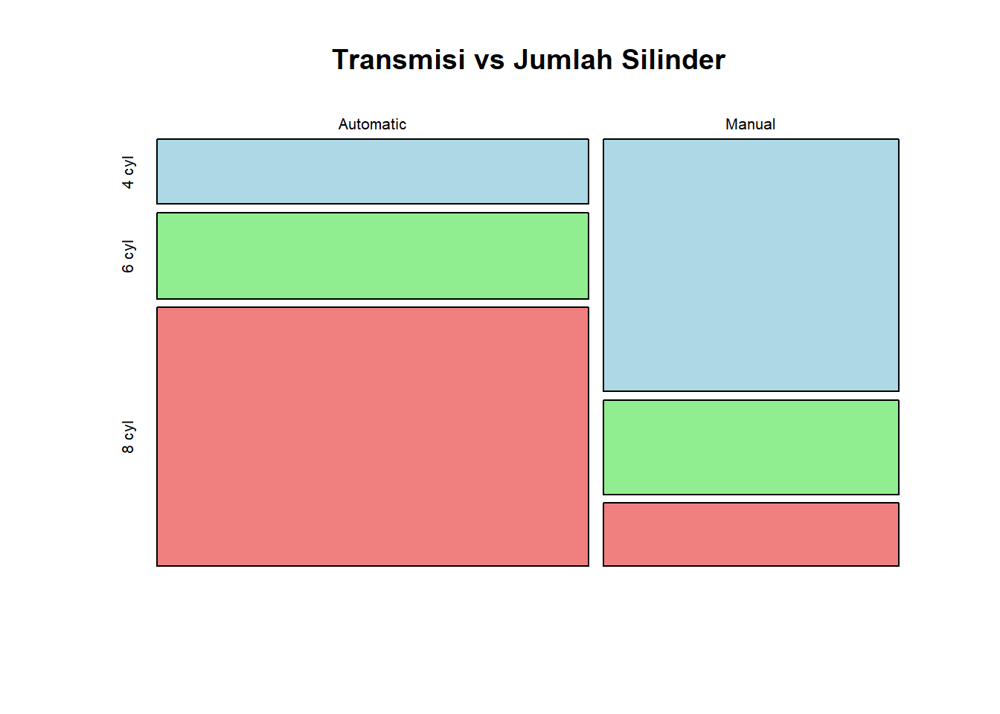
# Uji Chi-squared
chi_test <- chisq.test(tabel_konting)Warning in chisq.test(tabel_konting): Chi-squared approximation may be
incorrectprint(chi_test)
Pearson's Chi-squared test
data: tabel_konting
X-squared = 8.7407, df = 2, p-value = 0.01265# Interpretasi
if (chi_test$p.value < 0.05) {
cat("\nKesimpulan: Tipe transmisi dan jumlah silinder TIDAK independen (saling berhubungan)\n")
} else {
cat("\nKesimpulan: Tipe transmisi dan jumlah silinder independen (tidak berhubungan)\n")
}
Kesimpulan: Tipe transmisi dan jumlah silinder TIDAK independen (saling berhubungan)# Lihat expected frequencies
cat("\nFrekuensi yang diharapkan:\n")
Frekuensi yang diharapkan:print(chi_test$expected)
4 cyl 6 cyl 8 cyl
Automatic 6.53125 4.15625 8.3125
Manual 4.46875 2.84375 5.6875Korelasi Pearson mengukur keeratan hubungan linear antara dua variabel numerik. Nilainya berkisar dari -1 hingga +1: - r ≈ +1: korelasi positif sempurna - r ≈ 0: tidak ada korelasi linear - r ≈ -1: korelasi negatif sempurna
R
# Hitung matriks korelasi untuk semua variabel numerik
cor_matrix <- cor(mtcars)
print(round(cor_matrix, 2)) mpg cyl disp hp drat wt qsec vs am gear carb
mpg 1.00 -0.85 -0.85 -0.78 0.68 -0.87 0.42 0.66 0.60 0.48 -0.55
cyl -0.85 1.00 0.90 0.83 -0.70 0.78 -0.59 -0.81 -0.52 -0.49 0.53
disp -0.85 0.90 1.00 0.79 -0.71 0.89 -0.43 -0.71 -0.59 -0.56 0.39
hp -0.78 0.83 0.79 1.00 -0.45 0.66 -0.71 -0.72 -0.24 -0.13 0.75
drat 0.68 -0.70 -0.71 -0.45 1.00 -0.71 0.09 0.44 0.71 0.70 -0.09
wt -0.87 0.78 0.89 0.66 -0.71 1.00 -0.17 -0.55 -0.69 -0.58 0.43
qsec 0.42 -0.59 -0.43 -0.71 0.09 -0.17 1.00 0.74 -0.23 -0.21 -0.66
vs 0.66 -0.81 -0.71 -0.72 0.44 -0.55 0.74 1.00 0.17 0.21 -0.57
am 0.60 -0.52 -0.59 -0.24 0.71 -0.69 -0.23 0.17 1.00 0.79 0.06
gear 0.48 -0.49 -0.56 -0.13 0.70 -0.58 -0.21 0.21 0.79 1.00 0.27
carb -0.55 0.53 0.39 0.75 -0.09 0.43 -0.66 -0.57 0.06 0.27 1.00# Uji korelasi antara displacement dan weight
cor.test(mtcars$disp, mtcars$wt)
Pearson's product-moment correlation
data: mtcars$disp and mtcars$wt
t = 10.576, df = 30, p-value = 1.222e-11
alternative hypothesis: true correlation is not equal to 0
95 percent confidence interval:
0.7811586 0.9442902
sample estimates:
cor
0.8879799 # Visualisasi scatter plot dengan korelasi
library(ggplot2)Warning: package 'ggplot2' was built under R version 4.4.3ggplot(mtcars, aes(x = disp, y = wt)) +
geom_point(size = 3, color = "steelblue") +
geom_smooth(method = "lm", se = TRUE, color = "red") +
labs(title = "Hubungan antara Displacement dan Weight",
subtitle = sprintf("Korelasi Pearson: r = %.3f", cor(mtcars$disp, mtcars$wt)),
x = "Displacement (cu.in.)",
y = "Weight (1000 lbs)") +
theme_minimal()`geom_smooth()` using formula = 'y ~ x'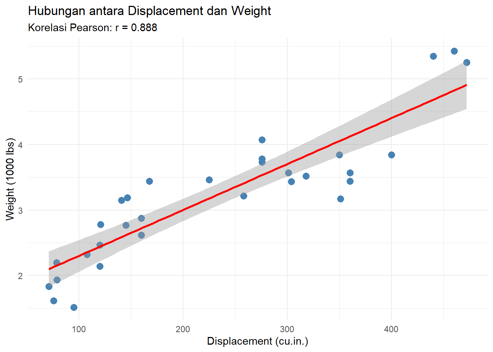
Untuk melihat korelasi banyak variabel sekaligus, gunakan heatmap:
R
# Install jika belum ada
install.packages("corrplot")R
library(corrplot)corrplot 0.95 loaded# Buat heatmap korelasi
corrplot(cor_matrix,
method = "color",
type = "upper",
tl.col = "black",
tl.srt = 45,
addCoef.col = "black",
number.cex = 0.7,
col = colorRampPalette(c("blue", "white", "red"))(200),
title = "Heatmap Korelasi - Dataset mtcars",
mar = c(0, 0, 2, 0))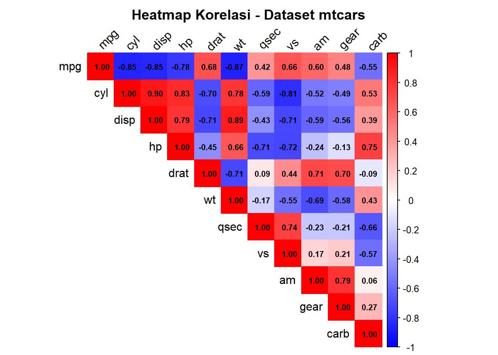
Interpretasi: - Variabel dengan korelasi tinggi (merah tua/biru tua) saling berhubungan erat - MPG berkorelasi negatif kuat dengan weight, displacement, dan cyl - Weight dan displacement berkorelasi positif sangat kuat
Regresi linear digunakan untuk memodelkan hubungan antara variabel dependen (Y) dan variabel independen (X):
\[Y = \beta_0 + \beta_1 X + \varepsilon\]
di mana: - \(\beta_0\) = intercept (nilai Y ketika X = 0) - \(\beta_1\) = slope (perubahan Y untuk setiap kenaikan 1 unit X) - \(\varepsilon\) = error term
Studi Kasus: Memprediksi weight berdasarkan displacement
R
# Bangun model regresi
model <- lm(wt ~ disp, data = mtcars)
# Lihat ringkasan model
summary(model)
Call:
lm(formula = wt ~ disp, data = mtcars)
Residuals:
Min 1Q Median 3Q Max
-0.89044 -0.29775 -0.00684 0.33428 0.66525
Coefficients:
Estimate Std. Error t value Pr(>|t|)
(Intercept) 1.5998146 0.1729964 9.248 2.74e-10 ***
disp 0.0070103 0.0006629 10.576 1.22e-11 ***
---
Signif. codes: 0 '***' 0.001 '**' 0.01 '*' 0.05 '.' 0.1 ' ' 1
Residual standard error: 0.4574 on 30 degrees of freedom
Multiple R-squared: 0.7885, Adjusted R-squared: 0.7815
F-statistic: 111.8 on 1 and 30 DF, p-value: 1.222e-11# Ekstrak koefisien
beta_0 <- coef(model)[1]
beta_1 <- coef(model)[2]
cat(sprintf("Persamaan Regresi: wt = %.4f + %.4f × disp\n", beta_0, beta_1))Persamaan Regresi: wt = 1.5998 + 0.0070 × dispcat(sprintf("\nInterpretasi:\n"))
Interpretasi:cat(sprintf("- Setiap kenaikan 1 cu.in. displacement, weight bertambah %.4f (1000 lbs)\n", beta_1))- Setiap kenaikan 1 cu.in. displacement, weight bertambah 0.0070 (1000 lbs)cat(sprintf("- R-squared: %.4f (%.1f%% variansi weight dijelaskan oleh displacement)\n",
summary(model)$r.squared, summary(model)$r.squared * 100))- R-squared: 0.7885 (78.9% variansi weight dijelaskan oleh displacement)# Visualisasi
plot(mtcars$disp, mtcars$wt,
main = "Regresi Linear: Weight vs Displacement",
xlab = "Displacement (cu.in.)",
ylab = "Weight (1000 lbs)",
pch = 19, col = "steelblue")
abline(model, col = "red", lwd = 2)
legend("topleft",
legend = c("Data", sprintf("y = %.2f + %.4fx", beta_0, beta_1)),
col = c("steelblue", "red"),
pch = c(19, NA),
lty = c(NA, 1),
lwd = c(NA, 2))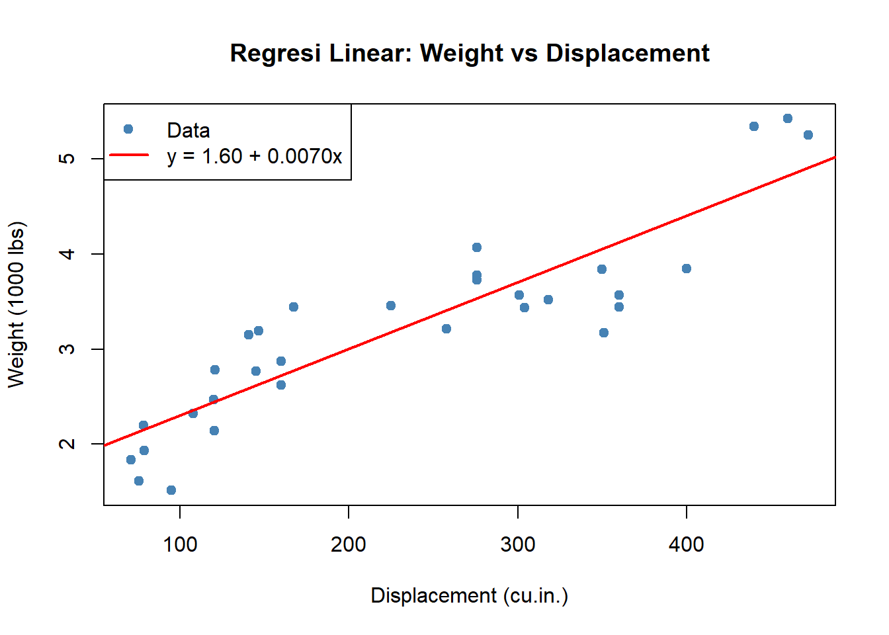
Beberapa metrik penting untuk mengevaluasi model:
R
# 1. R-squared
r_squared <- summary(model)$r.squared
cat(sprintf("R-squared: %.4f\n", r_squared))R-squared: 0.7885cat(" → Proporsi variansi Y yang dijelaskan oleh model\n\n") → Proporsi variansi Y yang dijelaskan oleh model# 2. Adjusted R-squared (lebih baik untuk multiple regression)
adj_r_squared <- summary(model)$adj.r.squared
cat(sprintf("Adjusted R-squared: %.4f\n", adj_r_squared))Adjusted R-squared: 0.7815# 3. Residual Standard Error
rse <- summary(model)$sigma
cat(sprintf("\nResidual Standard Error: %.4f\n", rse))
Residual Standard Error: 0.4574cat(" → Rata-rata jarak data dari garis regresi\n") → Rata-rata jarak data dari garis regresi# 4. F-statistic (uji keseluruhan model)
f_stat <- summary(model)$fstatistic
p_value <- pf(f_stat[1], f_stat[2], f_stat[3], lower.tail = FALSE)
cat(sprintf("\nF-statistic: %.4f, p-value: %.6f\n", f_stat[1], p_value))
F-statistic: 111.8496, p-value: 0.000000if (p_value < 0.05) {
cat(" → Model secara keseluruhan SIGNIFIKAN\n")
} → Model secara keseluruhan SIGNIFIKAN# Analisis residual
par(mfrow = c(2, 2))
plot(model)
par(mfrow = c(1, 1))Interpretasi Plot Residual: 1. Residuals vs Fitted: Harus acak, tidak ada pola → asumsi linearitas terpenuhi 2. Q-Q Plot: Titik harus di sepanjang garis diagonal → asumsi normalitas residual 3. Scale-Location: Harus datar → asumsi homoskedastisitas (variansi konstan) 4. Residuals vs Leverage: Identifikasi outlier berpengaruh
R
# Buat data baru untuk prediksi
data_baru <- data.frame(disp = c(100, 200, 300, 400))
# Lakukan prediksi
prediksi <- predict(model, newdata = data_baru, interval = "confidence", level = 0.95)
# Tampilkan hasil
hasil_prediksi <- cbind(data_baru, prediksi)
colnames(hasil_prediksi) <- c("Displacement", "Prediksi Weight", "CI Lower", "CI Upper")
print(hasil_prediksi) Displacement Prediksi Weight CI Lower CI Upper
1 100 2.300847 2.058800 2.542894
2 200 3.001880 2.831585 3.172174
3 300 3.702912 3.513001 3.892823
4 400 4.403945 4.121484 4.686406# Visualisasi prediksi
plot(mtcars$disp, mtcars$wt,
main = "Prediksi dengan Interval Kepercayaan 95%",
xlab = "Displacement (cu.in.)",
ylab = "Weight (1000 lbs)",
pch = 19, col = "steelblue",
xlim = c(0, 500), ylim = c(0, 7))
abline(model, col = "red", lwd = 2)
# Tambahkan interval kepercayaan
new_disp <- seq(min(mtcars$disp), max(mtcars$disp), length.out = 100)
pred_interval <- predict(model,
newdata = data.frame(disp = new_disp),
interval = "confidence",
level = 0.95)
lines(new_disp, pred_interval[, "lwr"], col = "orange", lty = 2, lwd = 2)
lines(new_disp, pred_interval[, "upr"], col = "orange", lty = 2, lwd = 2)
# Tambahkan titik prediksi
points(data_baru$disp, prediksi[, "fit"], col = "darkgreen", pch = 17, cex = 2)
legend("topleft",
legend = c("Data Aktual", "Garis Regresi", "CI 95%", "Prediksi Baru"),
col = c("steelblue", "red", "orange", "darkgreen"),
pch = c(19, NA, NA, 17),
lty = c(NA, 1, 2, NA),
lwd = c(NA, 2, 2, NA))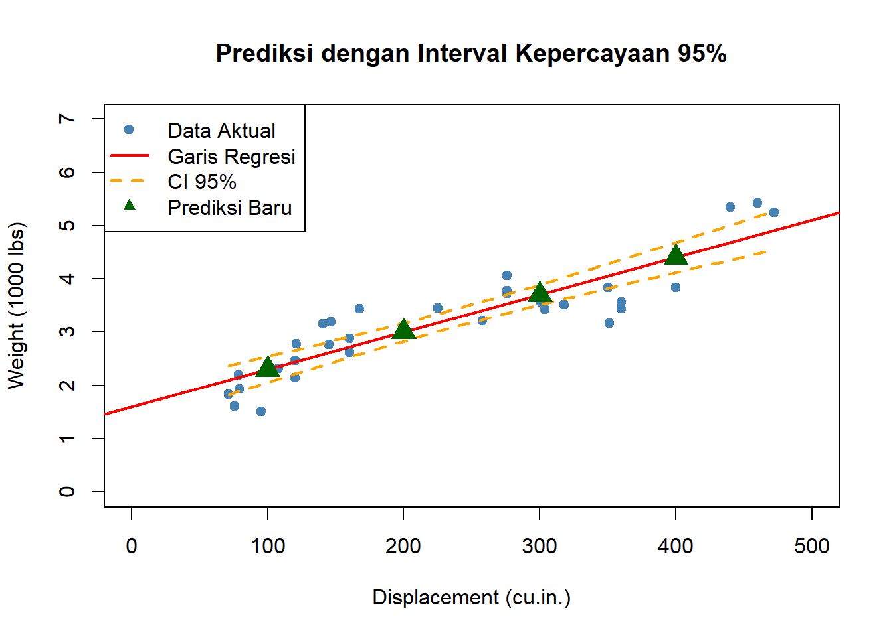
Sebagai data analyst profesional, kemampuan mengomunikasikan hasil sama pentingnya dengan kemampuan analisis. Quarto adalah tools modern untuk membuat laporan analisis yang interaktif dan profesional.
Langkah 1: Buat file Quarto baru di RStudio
File > New File > Quarto DocumentIsi judul, misalnya: “Laporan Analisis Performa Kendaraan”
Langkah 2: Struktur dasar file .qmd
---
title: "Laporan Analisis Performa Kendaraan"
author: "Nama Anda"
date: "2025-11-09"
format:
html:
toc: true
toc-depth: 2
code-fold: true
theme: cosmo
---
## Pendahuluan
Laporan ini menyajikan analisis komprehensif tentang...
## Metodologi
### Data
Dataset yang digunakan adalah `mtcars` yang berisi...
### Analisis
Analisis dilakukan menggunakan R dengan pendekatan...Markdown adalah bahasa markup sederhana untuk formatting teks:
# Heading Level 1
## Heading Level 2
### Heading Level 3
**Teks tebal (bold)**
*Teks miring (italic)*
***Teks tebal dan miring***
- Item list 1
- Item list 2
- Sub-item 2.1
- Sub-item 2.2
1. Item bernomor 1
2. Item bernomor 2
3. Item bernomor 3
[Link ke website](https://www.example.com)

> Ini adalah blockquote
> untuk kutipan atau catatan penting
| Kolom 1 | Kolom 2 | Kolom 3 |
|---------|---------|---------|
| Data 1 | Data 2 | Data 3 |
| Data 4 | Data 5 | Data 6 |
`kode inline` untuk menyebut fungsi atau variabel
```kode blok
untuk menulis kodeLaTeX memungkinkan Anda menulis rumus matematis dengan rapi:
Inline math (di dalam kalimat):
Rata-rata dihitung dengan rumus $\bar{x} = \frac{1}{n}\sum_{i=1}^{n}x_i$Hasil: Rata-rata dihitung dengan rumus \(\bar{x} = \frac{1}{n}\sum_{i=1}^{n}x_i\)
Display math (terpisah, di tengah):
$
\bar{x} = \frac{1}{n}\sum_{i=1}^{n}x_i
$Hasil: \(\bar{x} = \frac{1}{n}\sum_{i=1}^{n}x_i\)
Simbol-simbol umum:
Huruf Yunani:
$\alpha, \beta, \gamma, \delta, \epsilon, \theta, \mu, \sigma, \pi$
$\Sigma, \Delta, \Omega$
Operasi:
$\sum_{i=1}^{n}$, $\int_{a}^{b}$, $\frac{a}{b}$, $\sqrt{x}$, $x^2$, $x_i$
Statistik:
$\bar{x}$ (mean), $s^2$ (variansi), $\hat{\beta}$ (estimator)
Probabilitas:
$P(A)$, $P(A|B)$, $X \sim N(\mu, \sigma^2)$
Relasi:
$\leq, \geq, \neq, \approx, \equiv$Contoh persamaan regresi lengkap:
$
\begin{align}
Y_i &= \beta_0 + \beta_1 X_i + \varepsilon_i \\
\text{dimana } & \varepsilon_i \sim N(0, \sigma^2) \\
\hat{\beta}_1 &= \frac{\sum_{i=1}^{n}(X_i - \bar{X})(Y_i - \bar{Y})}{\sum_{i=1}^{n}(X_i - \bar{X})^2} \\
\hat{\beta}_0 &= \bar{Y} - \hat{\beta}_1\bar{X}
\end{align}
$Quarto memungkinkan eksekusi kode R langsung dalam dokumen:
```{r}
# Kode ini akan dieksekusi dan hasilnya ditampilkan
summary(mtcars$mpg)
```Opsi chunk untuk kontrol tampilan:
```{r}
#| echo: true # Tampilkan kode
#| eval: true # Jalankan kode
#| warning: false # Sembunyikan warning
#| message: false # Sembunyikan message
#| fig-width: 8 # Lebar gambar
#| fig-height: 6 # Tinggi gambar
#| fig-cap: "Judul gambar"
plot(mtcars$disp, mtcars$wt)
```Render ke HTML:
format: htmlRender ke PDF (perlu install TinyTeX):
R
# Install TinyTeX (sekali saja)
install.packages("tinytex")
tinytex::install_tinytex()format: pdfRender ke DOCX:
format: docxRender ke multiple format sekaligus:
format:
html:
toc: true
code-fold: true
pdf:
toc: true
docx:
toc: trueRender melalui kode:
R
library(quarto)
quarto_render("laporan.qmd")Berikut template lengkap untuk laporan analisis:
---
title: "Analisis Performa Kendaraan: Dataset mtcars"
author: "Data Analyst Tim"
date: "2025-11-02"
format:
html:
toc: true
toc-depth: 3
code-fold: show
code-tools: true
theme: cosmo
highlight-style: github
---
## Executive Summary
Laporan ini menyajikan analisis komprehensif terhadap performa 32 model kendaraan menggunakan dataset `mtcars`. Analisis mencakup statistik deskriptif, pengujian hipotesis, dan pemodelan regresi untuk mengidentifikasi faktor-faktor yang mempengaruhi konsumsi bahan bakar.
**Temuan Utama:**
1. Mobil manual memiliki rata-rata MPG **lebih tinggi** dibanding automatic (signifikan, p < 0.001)
2. Terdapat korelasi **negatif kuat** antara weight dan MPG (r = -0.87)
3. Model regresi dapat menjelaskan **78.9%** variansi weight dari displacement
## Metodologi
### Data
Dataset `mtcars` berisi 32 observasi dengan 11 variabel:
```{r}
#| echo: false
data(mtcars)
str(mtcars)
```
### Analisis Statistik
Analisis dilakukan dengan R versi 4.4.2 menggunakan pendekatan inferensia statistik:
- **Statistik Deskriptif**: mean, median, standar deviasi
- **Uji Hipotesis**: t-test, ANOVA (α = 0.05)
- **Korelasi**: Pearson correlation
- **Regresi**: Simple Linear Regression
## Hasil Analisis
### Perbandingan MPG: Automatic vs Manual
```{r}
#| warning: false
#| fig-cap: "Distribusi MPG berdasarkan tipe transmisi"
boxplot(mpg ~ am, data = mtcars,
names = c("Automatic", "Manual"),
col = c("lightcoral", "lightblue"),
main = "Perbandingan MPG",
ylab = "Miles per Gallon")
# Uji t
t_result <- t.test(mpg ~ am, data = mtcars)
print(t_result)
```
Hasil uji t menunjukkan perbedaan signifikan (p-value < 0.05).
Mobil manual memiliki rata-rata MPG yang lebih tinggi dibandingkan dengan mobil automatic.
### Model Regresi
Model regresi untuk memprediksi weight dari displacement:
$\text{Weight} = \beta_0 + \beta_1 \times \text{Displacement} + \varepsilon$
```{r}
model <- lm(wt ~ disp, data = mtcars)
summary(model)
```
Persamaan regresi yang diperoleh:
$\widehat{\text{Weight}} = 1.6 + 0.00701 \times \text{Displacement}$
dengan $R^2 = 0.789$.
## Kesimpulan dan Rekomendasi
1. **Kesimpulan Utama**: Tipe transmisi dan karakteristik mesin (displacement, weight) memiliki pengaruh signifikan terhadap efisiensi bahan bakar.
2. **Rekomendasi**:
- Untuk efisiensi bahan bakar, prioritaskan kendaraan dengan transmisi manual
- Pertimbangkan trade-off antara tenaga mesin (displacement) dan konsumsi bahan bakar
- Optimalkan weight kendaraan untuk meningkatkan MPG
## Referensi
Henderson and Velleman (1981). Building multiple regression models interactively. *Biometrics*, 37, 391–411.Selamat! Anda telah menyelesaikan modul yang sangat komprehensif tentang inferensia statistik. Mari kita rangkum perjalanan Anda:
Distribusi Sampling: Anda memahami bahwa sampel adalah jembatan untuk memahami populasi. Central Limit Theorem memberikan fondasi matematis untuk inferensia.
Taksiran dan Interval Kepercayaan: Anda tidak hanya memberikan satu angka taksiran, tetapi juga rentang yang merefleksikan ketidakpastian dengan tingkat kepercayaan tertentu.
Pengujian Hipotesis: Anda dapat membuat klaim tentang populasi dan mengujinya secara objektif menggunakan data sampel, baik dengan uji-t, ANOVA, maupun Chi-squared.
Korelasi dan Regresi: Anda dapat mengidentifikasi hubungan antar variabel dan membangun model prediktif untuk pengambilan keputusan.
Komunikasi Hasil: Anda dapat menyajikan analisis kompleks dalam format yang profesional dan mudah dipahami menggunakan Quarto, Markdown, dan LaTeX.
Sebagai data analyst, Anda tidak hanya mengolah angka. Anda: - Mengubah data menjadi insight - Membuat keputusan berbasis bukti - Mengomunikasikan temuan ke stakeholder - Memberikan rekomendasi yang actionable
Keterampilan yang Anda pelajari di modul ini adalah fondasi untuk karir di bidang data science, business analytics, research, dan banyak bidang lainnya.
Untuk memperdalam pemahaman Anda, cobalah eksplorasi sederhana berikut dengan dataset mtcars:
Pilih satu variabel numerik (misalnya hp, mpg, atau wt), lalu: - Hitung mean, median, dan standar deviasinya - Buat visualisasi (histogram atau boxplot) - Buat interval kepercayaan 95% untuk mean-nya
Pilih satu variabel kategorik (misalnya am untuk transmisi atau cyl untuk jumlah silinder), lalu: - Bandingkan mean dari variabel numerik antar kelompok - Lakukan uji t untuk melihat apakah perbedaannya signifikan - Buat visualisasi perbandingan (misalnya boxplot berdampingan)
Jika Anda ingin berlatih membuat laporan dengan Quarto: - Buat file .qmd baru - Tuliskan hasil eksplorasi Anda dengan format Markdown - Sisipkan kode R dan visualisasi - Render ke HTML atau PDF
Catatan: Ini hanya latihan mandiri untuk memperdalam pemahaman. Tidak ada submission atau penilaian formal. Lakukan sesuai dengan kecepatan belajar Anda sendiri!
Selamat bereksplorasi dengan data! 🚀📊